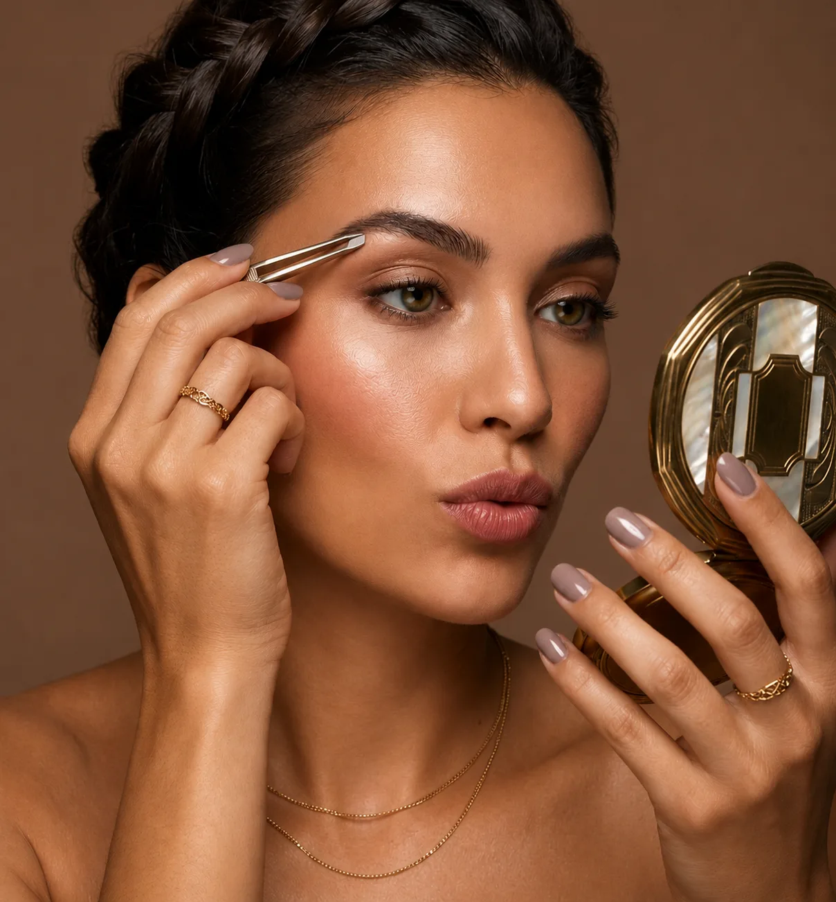

Regard
Beauté du regard
Un regard qui en dit long, des sourcils qui encadrent, des cils qui transforment. Maquillage naturel ou de soirée, teinture sourcils et cils, rehaussement, pose de faux cils : l'institut sublime votre regard pour chaque occasion.
